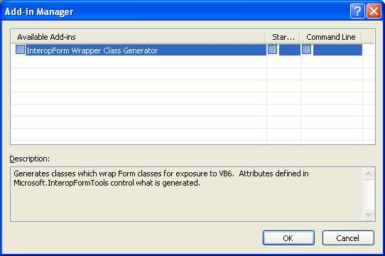
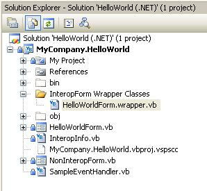

Generate InteropForm Wrapper Classes
For the attributed members to appear as part of the class visible to Visual Basic 6.0, the Generate InteropForm Wrapper Classes AddIn must be run. Select the AddIn from the Tools menu to run. It will create a folder called InteropForm Proxy Classes in each project that contains InteropForms.
Note: If you are using an Interop UserControl, there is no need to click Tools->Generate InteropForm Wrapper Classes; the addin only applies to InteropForms. Additionally, the Interop attributes (<InteropProperty>, <InteropEvent> and such) only apply to InteropForms; with Interop UserControls the only step necessary is to build the solution.

If the option is not available on the Tools menu, enable it from the Tools | Add-in Manager… menu.

The new folder and proxy file are created.

Build the solution via Build | Build Solution. The InteropForms will be registered so that Visual Basic 6.0 can see them.